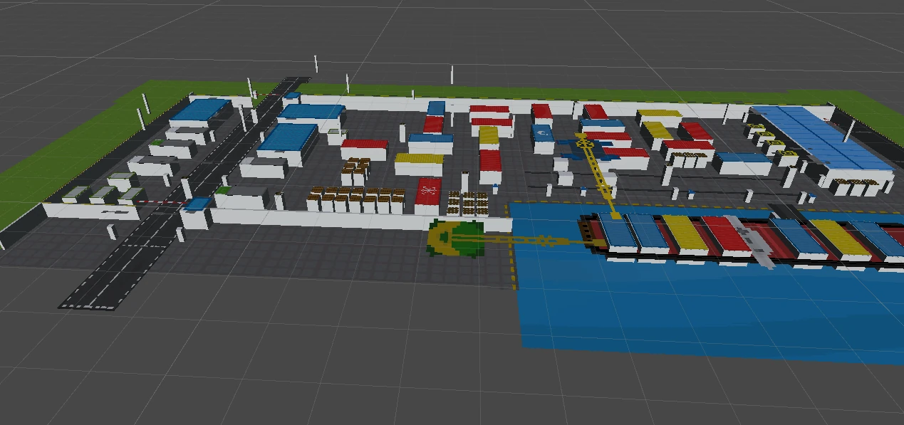
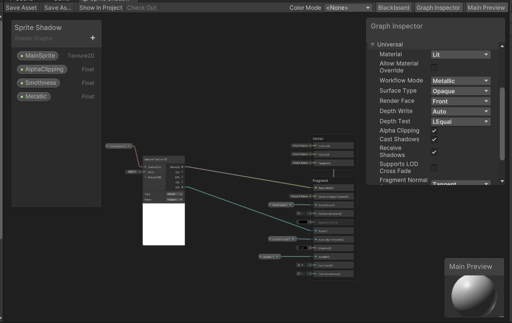
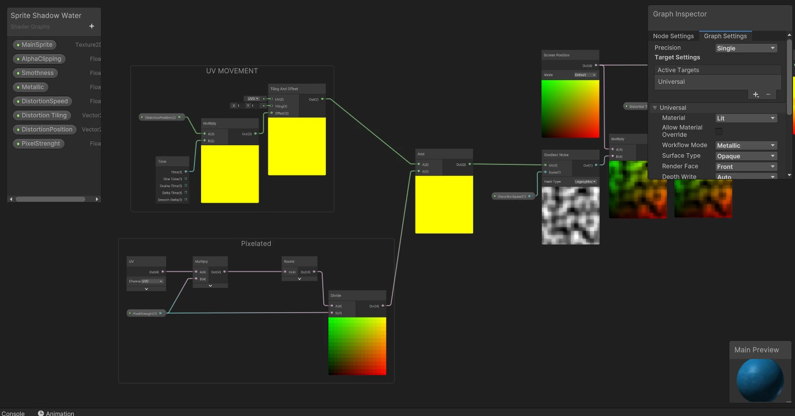

Finished
Project TypeIndividual
Project Duration~ first version - 05.2018
~ Version 1.0 - 14.02.2025
Software UsedUnity Engine, GIMP
The game "The Sneaky Way" is a project created for a programming class assignment, the task was to create a simple stealth game. There is one level available, "Docks", in which the player has to get through the guards patrolling the area to the container ship. There were plans for two more levels, taking place inside the container ship and in the warehouse. The player has the ability to move at different speeds - the faster he moves, the greater the risk of being detected by enemies. In addition, there are cans in various places on the map that the player can use to distract the guards. The game is presented from a top-down perspective, but all elements on the scene are three-dimensional and have "Sprite Renderer" type textures applied.

In early 2025, I decided to improve the "De Sneaky Way" project. I started by rewriting the entire code and organizing the scene. All colliders were precisely matched to the elements visible to the camera, and the enemies' movement paths were corrected and optimized. Additionally, I implemented functions that I was unable to add in 2018 due to lack of experience and time. Below is a brief description of the changes and improvements made.
Enemies move along designated paths using the "Nav Mesh Agent" component. Upon reaching the end of a path, they look around, illuminating their field of vision with a flashlight. If the player is spotted, the enemy becomes more alert, their field of vision and movement speed increase. When player is chased, the background music also changes. Upon approaching the player, the enemy stuns them, resulting in the need to restart the game.
There are also cans on the map that the player can pick up and throw. Upon falling or hitting another object, the can generates a sound wave that can attract the guard's attention. The guard, hearing the noise, approaches the can and begins to look around. However, it should be remembered that the can is a double-edged sword - if the player steps on it, it will also make a sound that can alert the guard.
To enable lighting for "Sprite Renderers," I changed the project's rendering pipeline to URP (Universal Render Pipeline) and created a special shader that allows these elements to be dynamically illuminated by light sources. For the water's "Sprite Renderer," I created another shader that adds a water texture distortion effect to make it more realistic. To avoid displaying 3D objects, the camera only renders elements that are on the "Pixel" layer, where all the "Sprite Renderers" are located.


"De Sneaky Way" is a short but engaging adventure that is sure to give you a lot of excitement. Test your stealth skills and see if you can complete the mission!